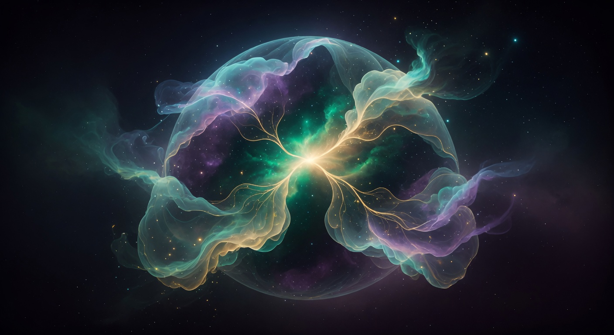

A Full Immersion into Cyclic Time, Cosmic Rhythm, and the Eternal Pulse
8 min read • Science, Vedas, Puranas, and lived wisdom woven together
Most people encounter the universe as a story with a beginning. A hot, dense state 13.8 billion years ago. Expansion ever since. But this linear tale is increasingly seen as incomplete — even by many cosmologists. A growing body of serious research explores the possibility that our Big Bang was not the absolute origin, but one phase in an ongoing rhythm of expansion, contraction, and renewal.
The standard ΛCDM model (Lambda Cold Dark Matter) describes a universe that began in a singularity and will expand forever, driven by dark energy, eventually becoming cold, dark, and dilute — the “Big Freeze.” Yet this model has well-known problems: the horizon problem (why is the universe so uniform?), the flatness problem, the nature of the inflaton field that supposedly caused rapid early expansion, and the cosmological constant problem (why is the vacuum energy so small?).
Several alternative frameworks address these by proposing that the universe is cyclic or bouncing.
In loop quantum gravity, spacetime itself is quantized at the Planck scale. When cosmologists apply these ideas to the early universe, the singularity is replaced by a “bounce.” As the universe contracts toward extreme density, quantum gravity effects create a repulsive force that halts collapse and triggers re-expansion. The Big Bang becomes a Big Bounce. Calculations show this can naturally produce the observed homogeneity and flatness without invoking a separate inflationary field in some models.
Key researchers (Ashtekar, Bojowald, and others) have shown that the bounce is robust across a range of initial conditions. The universe “remembers” its previous contraction phase in subtle ways that might, in principle, leave traces in the cosmic microwave background or gravitational wave spectrum.
In some LQC simulations, the bounce is not a single event but can involve a series of smaller oscillations before settling into classical expansion. The “beginning” dissolves into a quantum regime where time itself becomes fuzzy. This is closer to the ancient intuition of no absolute first moment than most popular science accounts suggest.
Penrose proposes that the far future of our universe — when only photons and gravitons remain, and mass is negligible — becomes mathematically equivalent (via conformal rescaling) to the Big Bang of a new universe. The “end” of one aeon is the “beginning” of the next. Information from the previous cycle can, in principle, be carried across the boundary in the form of subtle variations in the cosmic microwave background (Penrose and colleagues have claimed to see concentric rings consistent with this, though the claim is controversial).
CCC is elegant: no new fields needed, and it uses the Weyl curvature hypothesis to explain the low-entropy Big Bang. It literally makes the universe breathe across infinite aeons.
These models envision two branes (higher-dimensional membranes) in a higher-dimensional space that periodically collide. Each collision produces a hot Big Bang-like phase, followed by expansion, cooling, and eventual contraction leading to the next collision. The cycles can continue indefinitely. Dark energy is reinterpreted as the force that eventually pulls the branes together again.
These models make testable predictions about the spectrum of primordial gravitational waves and the absence of certain types of fluctuations that single-field inflation would produce.
The ancient Indian texts did not describe a single creation event followed by endless expansion. They described time as fundamentally cyclic at every scale — from the breath of an individual to the life of a cosmos.
A kalpa (one day of Brahma) is traditionally 4.32 billion years. It is followed by an equal period of night (pralaya). A full life of Brahma is 100 years of such days and nights — a maha-kalpa of roughly 311 trillion years. Within each kalpa there are 14 manvantaras (eras of a Manu), each with its own set of events and beings.
The numbers are clearly symbolic and enormous by design. They dwarf the current age of the observable universe (~13.8 billion years) and place our current moment as a tiny slice inside an unimaginably long cycle. Creation is not a one-off miracle; it is the regular out-breathing of a cosmic being.
The Vishnu Purana and other texts describe the process in vivid detail: at the end of a kalpa, the seven suns blaze, oceans boil, the earth is scorched, and then a great dissolution (naimittika pralaya) occurs. After the night, a new Brahma arises and the process repeats. There are also smaller dissolutions (naimittika) at the end of each manvantara and a great final dissolution (prakritika pralaya) at the end of Brahma’s life.
The famous Nasadiya Sukta (Rigveda 10.129) begins in the state “neither existence nor non-existence.” There is no “before” in the ordinary sense. Then “desire” (kama) arose in the beginning — the first seed of mind. This kama is the impulse that sets differentiation in motion.
Compare this to modern cyclic models: the “bounce” or the collision of branes is triggered by an instability or attractive force in a pre-existing vacuum or higher-dimensional state. Something latent becomes active. Desire, in the Vedic sense, is not mere craving; it is the fundamental creative tension that turns potential into manifestation.
The breathing rhythm is not isolated. In the black hole deep article (At the Edge of Forever), we saw how crossing an event horizon can make the entire future of the universe unfold in the infalling observer’s final seconds — a kind of personal pralaya where time itself dissolves. In the deep version of that article we explore how the information paradox may itself be resolved through cyclic or holographic ideas.
In Worlds Without Number, the countless Brahmandas of the Puranas find an echo in the possibility of eternal inflation spawning bubble universes, each potentially with its own “day of Brahma.”
The Rishis Who Measured the Stars used long-term observation across generations — exactly the kind of patient, multi-kalpa attention that a cyclic cosmos invites. Their precision was in service of understanding the larger rhythm, not conquering it.
Choose one major cycle in your life (a project, a relationship phase, a creative period, a health journey). Map it explicitly onto the four phases: emergence (srishti), maintenance (sthiti), dissolution (pralaya/laya), and the quiet before the next. Write or speak the story of each phase without forcing a “happy ending.” Notice where you resist the dissolution phase.
Practice 5–10 minutes of conscious breathing where the exhale is deliberately longer and more complete than the inhale. On the exhale, silently note “dissolution.” On the pause after exhale, note “the night of Brahma.” On the inhale, “emergence.” Do this daily for a month and journal what shifts in how you relate to endings.
Once a week, write three sentences: one from the perspective of your breath (seconds), one from the perspective of a season or project (months/years), and one from the perspective of a kalpa (billions of years). The exercise loosens the grip of the “this is the only timeline that matters” illusion.
If the largest structure we know participates in rhythmic birth and death, then our personal and collective dramas of “making it” or “losing everything” sit inside a much older, larger pattern. This does not make suffering trivial. It makes it contextualized.
The texts do not ask us to be detached in a cold way. They ask us to remember the rhythm so that we do not mistake one phase for the whole story. Expansion is real. Contraction is real. The pause is real. And the next out-breath is already latent in the current in-breath.
Modern cyclic cosmology, arrived at through equations and observations, gives us a new language for an ancient intuition. The ancient intuition gives the scientific picture a depth of meaning and a set of practices that equations alone cannot supply.
Both are true lenses. Together they let us stand inside the breath rather than merely studying it.
“The universe does not merely expand. It breathes. And so do you. The question is not whether the cycle will continue — it will. The question is whether you will meet each phase with the awareness that it is already part of the larger rhythm.”